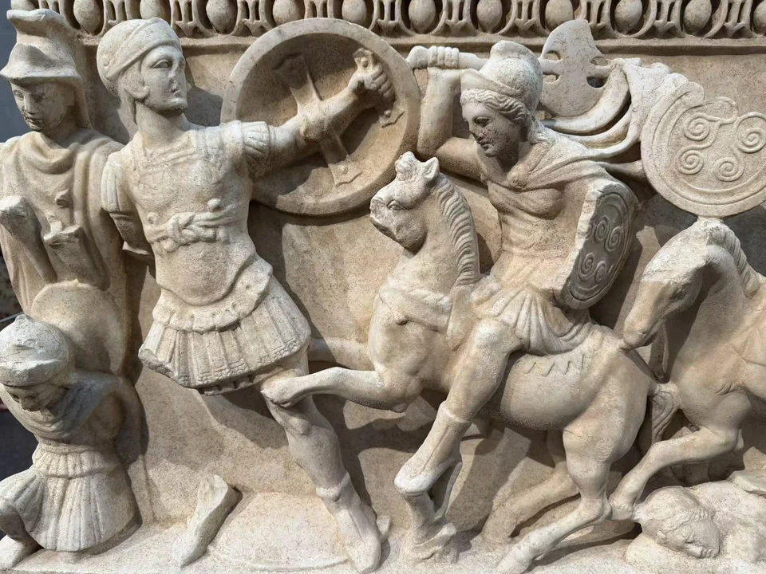
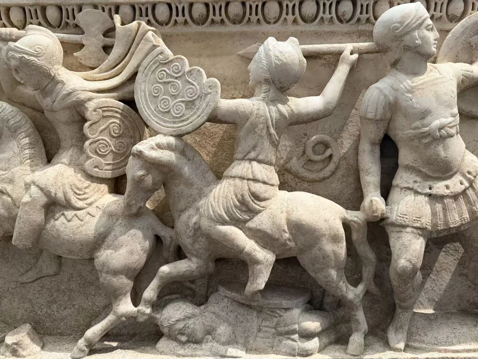
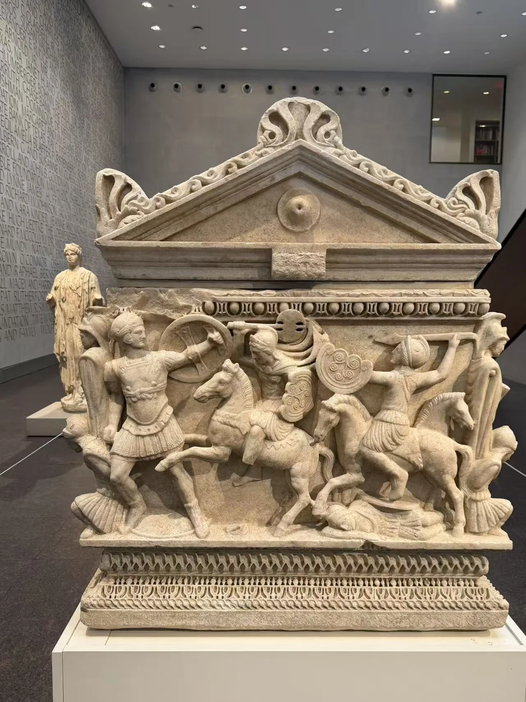
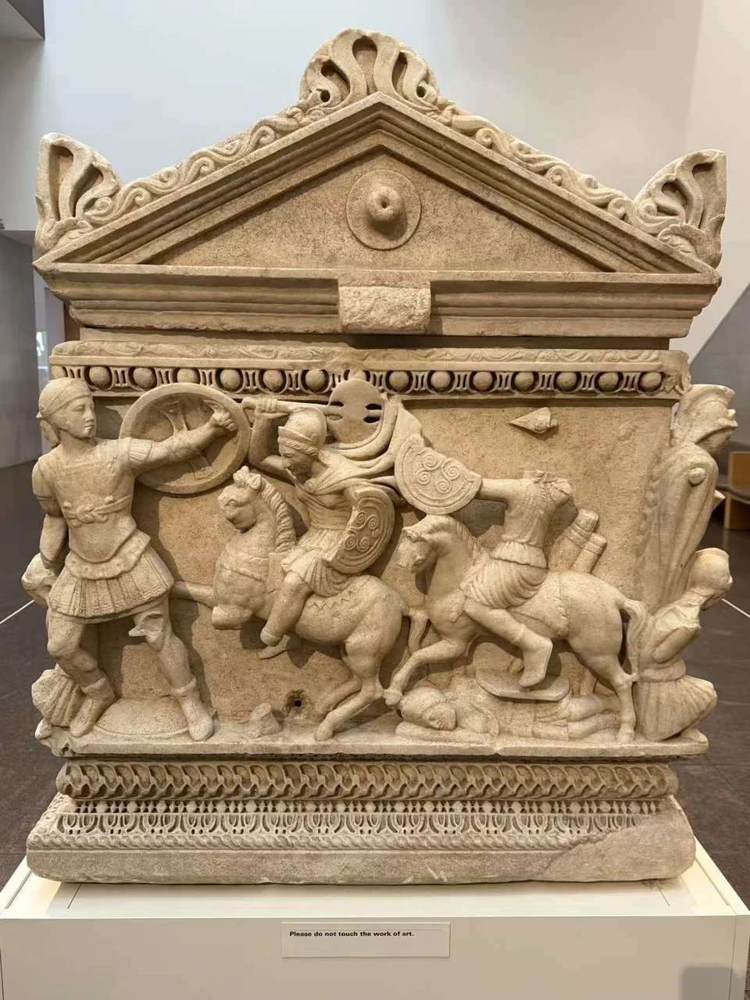
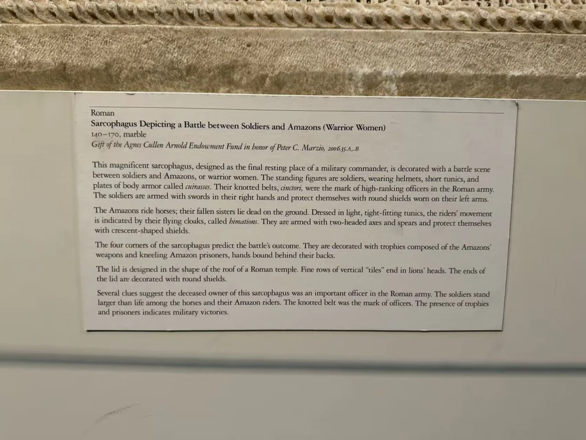

ROMAN SARCOPHAGI / R21
士兵与亚马逊女战士战争石棺
两条长边、两个端面都有战斗。绕着它走，才能看见骑马的亚马逊女战士怎样迎上步行士兵，也能看见石棺在四角预先写下了这场神话战争的结局。

- 年代
- 140–170年
- 材料
- 大理石
- 收藏
- 休斯顿美术馆
- 观看地点
- 休斯顿美术馆 · 休斯顿
- 馆藏号
- 2006.35.A,.B
一组组交锋，绕到另一面继续
先看一名举盾的士兵与迎面而来的骑者。士兵两脚分开，胸甲与腰带把身体收得紧实；马上的女战士举起双刃斧，披风向后扬起。圆盾与带卷纹的月牙形盾在两人之间交叠，马腿、人的小腿与倒伏的身体挤在下缘。放大后，战斗不再只是整面热闹，而成为一对一的阻挡与进逼。
另一条长边延续相近的交锋组合，却并非每个残损和细节都相同。转到端部，立着的士兵与两名骑者又组成紧凑的一组。短衣、披风、盾牌和马身反复出现，使四面彼此相接。两张端面照片中仍能看出人物保存程度的不同；完整体积与局部缺损一起留在今日的观看之中。




屋顶之下，胜负已有暗示
棺盖像一座小型建筑的屋顶：两端有三角山墙和中央圆盾，斜坡上的瓦列一直通向狮首。盖与棺身之间，上下排列的纹带把战斗围在清楚的边框里。最容易略过的是转角：武器组成的战利品标志下方，跪着双手被缚的女俘。这些相对静止的人物，使仍在挥动的武器有了胜负的指向。 [27]
馆方依据军人的结带、较大的身体尺度，以及战利品与俘虏的安排，推测墓主可能是一位高级军官。这里没有墓主姓名可供确认，画面也不是某场战役的记录：亚马逊属于希腊神话中的女战士群体。石棺借神话的战斗，构造一种值得被纪念的军事形象。与波尔托纳乔拥挤、层层深入的战场并看，这件的对战单元和四面连续性尤其清楚。 [27]




从另一个角度看

现场展签 · 1张
